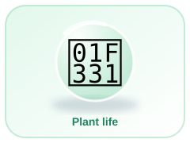
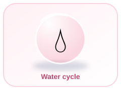
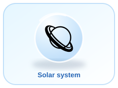

🌿
Living Things
Plants and animals grow, use energy and respond to their surroundings.
Ask • Observe • Experiment safely • Discover



Plants and animals grow, use energy and respond to their surroundings.
Water evaporates, forms clouds through condensation and falls as precipitation.
Earth is one of eight planets orbiting the Sun.
Pushes and pulls are forces. Magnets attract some materials such as iron.
Energy can move or change form. Electricity powers many devices.
Many materials are solids, liquids or gases. Heating and cooling can change their state.
Body systems work together. The lungs help us take oxygen into the body.
Rocks, soil, weather and landforms help shape our planet.
Do experiments only with an adult's permission. Never taste unknown substances, mix household chemicals, touch electrical sockets or use fire without adult supervision.